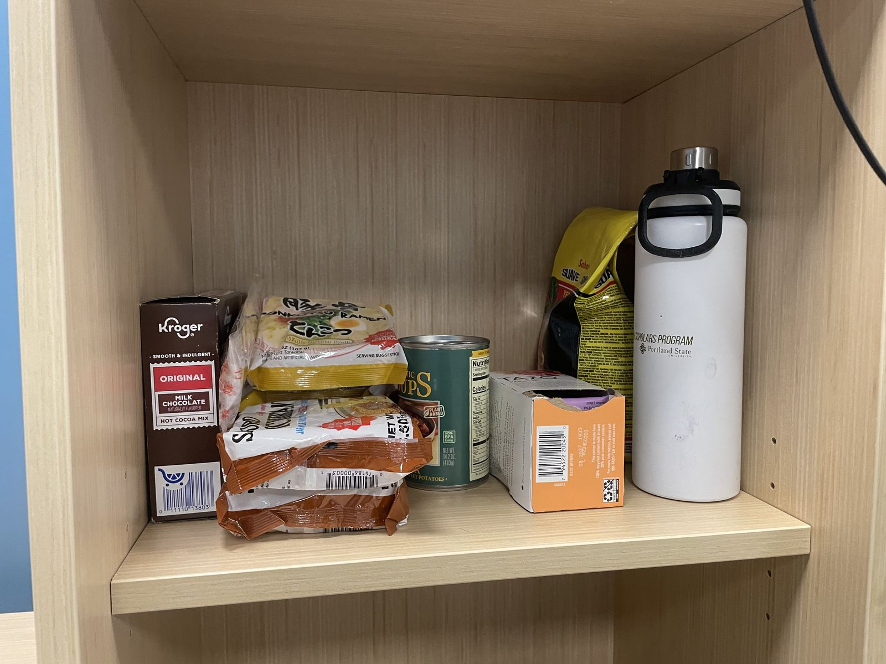
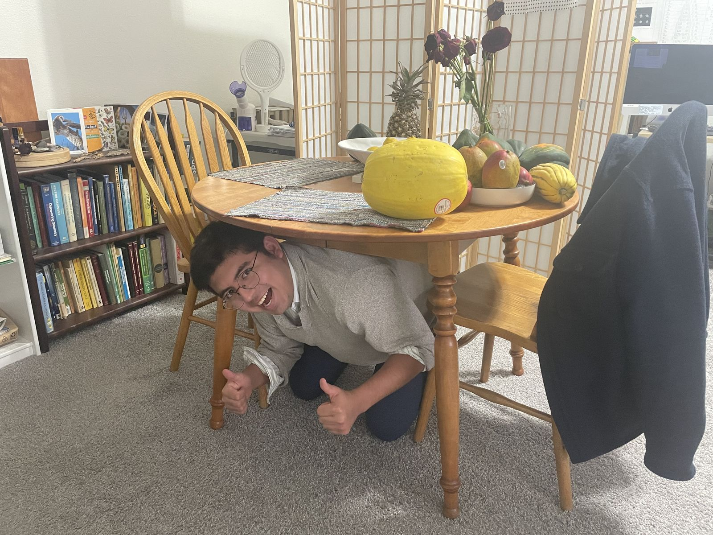

Cascadia earthquake visualizations · Be prepared
The odds are real. Being ready is up to you.
Nobody can say when the next big Pacific Northwest earthquake will happen. The report's numbers say one will happen, and probably within our lifetimes. Here is what to do before, during and after the shaking, following the five steps the USGS report recommends.
Why prepare? Chance of each earthquake in the next 50 years
A damaging deep quake under Puget Sound is more likely than not in the next 50 years. The last ones were in 1949, 1965 and 2001.
1 Before
Secure your space
Look around each room and ask: what would fall, break or slide if the room shook hard for a minute or more? A Cascadia M9 could shake for several minutes.
Tall furniture
Strap bookcases, dressers and cabinets to wall studs.
TVs and computers
Use safety straps or brackets so screens can't tip over.
Water heater
Strap it to the wall at the top and bottom. In an emergency, its tank is also a source of drinking water.
Heavy things low
Move heavy items and breakables to lower shelves. Nothing heavy above beds or couches.
Cabinet latches
Childproof latches stop dishes and jars from spilling out.
Gas shutoff
Know where it is and keep a wrench next to it. Turn it off only if you smell gas or hear a hiss. The gas company has to turn it back on.
Shoes by the bed
Keep sturdy shoes and a flashlight next to your bed. After a quake at night, the floor may be covered in glass.
Older houses
If your house was built before about 1980, ask whether it is bolted to its foundation. A seismic retrofit is one of the best ways to protect it.
2 Before
Be 2 Weeks Ready
After a major quake, roads, bridges, power and water could be out for a long time. Washington and Oregon emergency managers ask every household to be ready to look after itself for two weeks.

Grading my shelf
- Shelf-stable food. Nothing here needs a fridge, and it keeps for months.
- Food you'll actually eat. Familiar comfort food matters when things are stressful.
- A refillable bottle. Handy for carrying water from a distribution point.
- Far more water. One bottle lasts less than a day. Use the calculator below.
- No-cook food. Ramen and cocoa need hot water. Add food you can eat cold, like peanut butter, crackers, canned fruit, tuna and granola bars.
- A manual can opener and a way to heat water, such as a camp stove. Use it outdoors only.
How much water and food do you need?
28 gallons of water
84 meals
Guidelines: 1 gallon of water per person per day for drinking and basic hygiene, and about 1 ounce of water per pound of body weight per day for pets. Hot weather, nursing, and illness raise the need.
Your kit checklist
Tick things off as you collect them. Your ticks are saved only in this browser.
Make a family plan
Out-of-area contact
Pick one friend or relative far away. Everyone checks in with them. After a disaster, long-distance calls often get through when local ones don't.
Text, don't call
Texts use far less network capacity and can get through when calls fail. Keep calls for emergencies.
Meeting places
Pick one spot right outside your home and one outside your neighborhood in case you can't get home.
School and work
Find out the earthquake plans where your family spends the day, and who can pick up your kids.

3 During the shaking
Drop, Cover, and Hold On
-
Drop
Get down on your hands and knees before the shaking knocks you down. This position protects you and still lets you crawl.
-
Cover
Cover your head and neck with one arm. Crawl under a sturdy table or desk. If there is none, get down next to an inside wall, away from windows.
-
Hold On
Hold on to your shelter until the shaking stops. If it moves, move with it.
Where are you when it starts?
Three common myths
- “Run outside.”
- Most injuries happen when people try to move during shaking and are hit by falling objects or glass. Stay where you are, Drop, Cover, and Hold On.
- “Stand in a doorway.”
- In modern houses, doorways are no stronger than the rest of the house, and a swinging door can hurt you. Get under a table instead.
- “Use the triangle of life.”
- Lying next to furniture is not recommended by U.S. safety agencies. You can't predict how things will fall, and you're exposed to flying objects.
Seconds of warning
Turn on ShakeAlert
The USGS ShakeAlert system detects an earthquake as it starts and sends alerts to phones in Washington, Oregon and California before the strongest shaking arrives. Depending on how far you are from the quake, that is a few seconds to about a minute: enough to Drop, Cover, and Hold On.
- Make sure Emergency Alerts are turned on in your phone settings (they are on by default).
- Android phones also have Android Earthquake Alerts built in.
- The free MyShake app gives alerts for smaller quakes too.
If you are very close to the epicenter, the shaking may arrive before the alert. Don't wait for one; if you feel shaking, act.
4 On the coast
Feel the shaking? Go to high ground.
A Cascadia M9 would send a tsunami onto the Oregon and Washington coast, as it did in 1700. The first waves could arrive in as little as 15 to 20 minutes, faster than any official warning.
- Drop, Cover, and Hold On until the shaking stops.
- Then go right away. Long or strong shaking is your warning. Don't wait for a siren or alert.
- Go on foot to high ground or inland, following the blue tsunami route signs. Roads may be damaged or jammed.
- Stay there until officials say it's safe. Tsunamis come in a series of waves that can last for hours, and the first is often not the largest.
Visiting the coast? Look up the evacuation route from where you're staying when you arrive. Tsunami evacuation maps for WA, OR and CA (NANOOS) ↗
The 15-minute race
How far can you get on foot before the first wave? A brisk walk covers about 1 mile in 20 minutes.
Distances are on flat ground. Hills are slower. A common rule of thumb is to get 100 feet (30 m) above sea level or 2 miles inland, but your local evacuation map is the real guide.
Also see the orphan tsunami of 1700 visualization.
After the shaking
The first minutes, hours and days
First minutes
- Expect aftershocks. Drop, Cover, and Hold On again each time.
- Check yourself and others for injuries. Put on shoes.
- On the coast: go to high ground now.
- If you smell gas, leave and shut off the gas if you can. Don't use flames or light switches.
First hours
- Get out of damaged buildings and stay out.
- Stay away from downed power lines.
- Text your out-of-area contact.
- Listen to a battery or hand-crank radio for news.
First days
- Check on neighbors, especially older adults and people living alone.
- Use your kit. Eat food from the fridge first, then the freezer, then your shelf.
- Don't drink tap water until officials say it's safe.
- Take photos of damage for insurance.
5 Practice
Join the Great ShakeOut
Every year on the third Thursday of October, millions of people practice Drop, Cover, and Hold On at the same moment. Schools, offices and families all take part, and you can join on your own. Practice makes it a reflex: in a real quake, you'll have only seconds to react.
Next time, try a drill at home: say “Earthquake!”, everyone drops and covers for one minute, then talk about what you'd do next.
Register at shakeout.org ↗Try a one-minute drill now
A real Cascadia quake could last several minutes. See how long one minute feels under a table.
Official resources
- Great ShakeOut: Drop, Cover, and Hold On ↗What to do in every situation, including if you use a wheelchair
- Earthquake Country Alliance: Seven Steps to Earthquake Safety ↗Step-by-step home preparedness
- Washington Emergency Management: Preparedness ↗Washington's 2 Weeks Ready guides
- Oregon Emergency Management: 2 Weeks Ready ↗Oregon's kit and planning guide
- ShakeAlert ↗Earthquake early warning for the West Coast
- Ready.gov: Earthquakes ↗FEMA's earthquake guide and kit list
- American Red Cross: Earthquake safety ↗Before, during and after
- NANOOS tsunami evacuation maps ↗Zones and routes for the Pacific coast
This page is a summary for learning. Always follow the instructions of your local emergency managers.